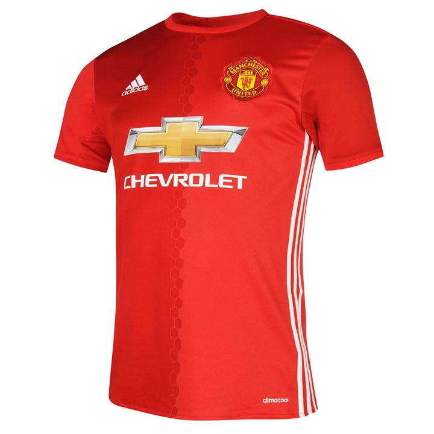
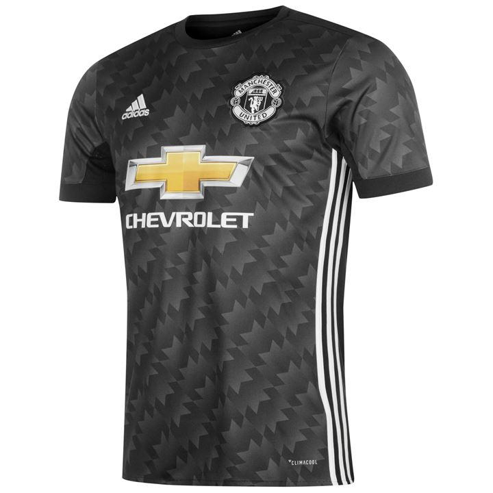
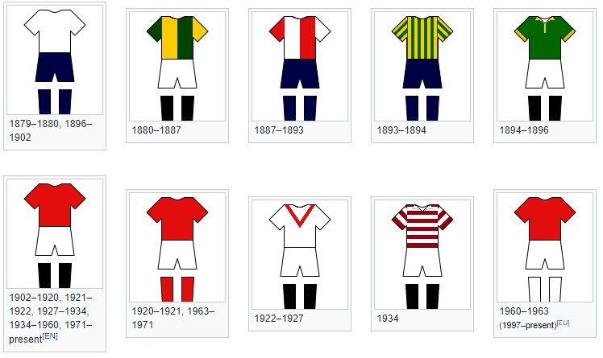

Историја дресова
Униформа Њутон Хита 1879, четири године пре него што је клуб одиграо свој први такмичарски меч, документована је као "бела са плавом линијом". Постоји фотографија тима Њутон Хита, направљена 1892. године, која показује играче који су носили црвено-беле дресове са коцкицама и тамно плаве шорцеве. Између 1894. и 1996. године играчи су носили зелене и златне дресове које су 1896. године замијениле беле кошуље уз које су носили тамно плаве шорцеве.
Манчестер Јунајтедов дрес је често била бела кошуља, црни кратки шорц и беле чарапе, али било је неколико изузетака. Ово укључује црну траку са плавим и златним одрезцима између 1993. и 1995. године, у плавој кошуљи са сребрним хоризонталним линијама који су носили током сезоне 1999-2000, и комплет за одмор 2011-12 који је имао краљевско плаво тело и рукаве са обручима направљеним од малих црно-белих пруга, црних кратких чарапа и плавих чарапа. Комплет сиво одсутних одеће током сезоне 1995-96 био је опао након само пет утакмица, најславније против Саутемптона, где је Алекс Фергусон присилио тим да се пресели у трећи комплет током полувремена свог финала. Разлог због тога што су играчи тврдили да имају проблема са проналаском својих саиграча због гомиле, Јунајтед није успео да освоји такмичење у комплету. 2001. године, да би прославио 100 година као "Манчестер Јунајтед", ослобођен је реверзибилног бијелог / златног комплета, иако су дресови за тренутну утакмицу били реверзибилни.


Трећи сет клуба је често плава, ово је најсвежији случај током сезоне 2014-15. Изузеци укључују зелену и златну кошуљу преполовљену између 1992. и 1994. године, плаво-бијелу пругасту кошуљу која се носила у сезонама 1994-95 и 1995-96, а једном у периоду 1996-97, комплетно црни комплет који се носио током сезона 1998-99, и бела кошуља са црно-црвеним хоризонталним линијама носи се између 2003-04 и 2005-06. Од 2006-07 до 2013-14, трећи комплет је био комплет за гостовања претходне сезоне, иако је био ажуриран са новим спонзорским клубом у периоду 2006-07 и 2010-11, осим 2008-09 када је свечано комплет покренуо знак 40-годишњица успјеха Европског купа 1967-68.
